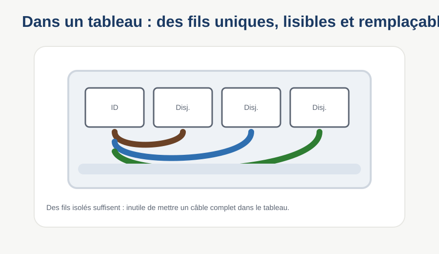
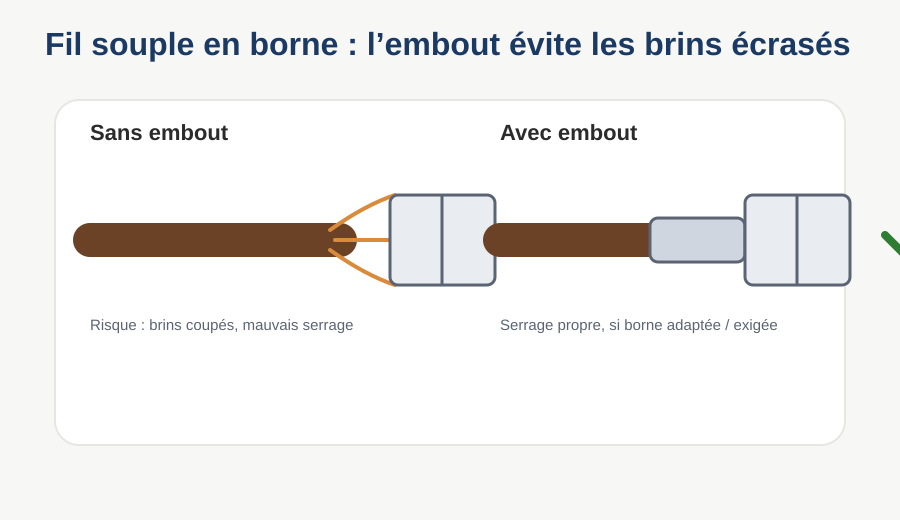

Fils unifilaires, rigide ou souple : lesquels, où, pourquoi.
TD 2 sur 3 — durée indicative : 1h
Dans le TD1, tu as appris à lire des câbles (plusieurs fils réunis sous une gaine). Ici, on entre dans un tableau électrique : on y trouve surtout des fils uniques, choisis et posés un par un.
Un câble tout fait (comme le U1000 R2V du TD1) a un nombre de fils fixé à l'avance par le fabricant, tous du même chemin, à la même longueur.
Dans un tableau électrique, chaque connexion part dans une direction différente : un disjoncteur ici, un bornier là, un contacteur plus loin. Il faut pouvoir choisir la couleur, la longueur et le chemin de chaque fil, un par un.
À gauche, un câble : tout le monde va au même endroit. À droite, des fils unifilaires : chacun part où on en a besoin.

Pour câbler l'intérieur d'un tableau électrique, avec des connexions qui partent dans toutes les directions, on utilise plutôt…
Tu connais déjà le sens de U (rigide, âme pleine) et de K (souple, multibrins) depuis le TD1. On les retrouve ici, appliqués aux fils de tableau.
450/750 V · âme pleine, classe 1
Un seul fil (couleur choisie selon le circuit). Bout plein et lisse → garde sa forme, ne se plie pas facilement.
Usage : liaisons longues et droites — dans une gaine ICTA, entre le disjoncteur de branchement et le tableau, câblage de puissance fixe.
450/750 V · âme classe 5, multibrins
Se plie facilement, épouse les formes. Bout effiloché → beaucoup de petits brins.
Usage : câblage interne d'un tableau ou d'une armoire — connexions entre disjoncteurs, contacteurs, bornes, souvent avec des coudes serrés. Circuits de puissance.

300/500 V · même construction que le H07V-K, en plus fin
Même souplesse que le H07V-K, mais en petites sections (0,75 à 1 mm² en pratique) : pas fait pour la puissance.
Usage : câblage de commande et de signal — bobines de relais, capteurs, circuits basse puissance à l'intérieur d'une armoire.
Il existe un fil H07V-R que tu n'as pas encore rencontré. À toi de deviner ce qu'il est, en t'appuyant sur ce que tu sais déjà. Rappel du TD1 : U = âme pleine (rigide), K = multibrins (souple)… et R ?
Indice visuel : l'âme n'est ni un seul gros fil plein (comme le U), ni une masse de brins très fins (comme le K), mais quelques brins moyens câblés ensemble.
H07V-R est un fil…
Le tableau électrique ne bouge pas. Alors pourquoi utiliser du fil souple à l'intérieur ?
| Rigide (H07V-U) | Souple (H07V-K / H05V-K) | |
|---|---|---|
| Âme | pleine, un seul brin | multibrins fins |
| Se plie | difficilement, garde sa forme | facilement, épouse les formes |
| Terrain de jeu | lignes longues et droites, gaines | câblage serré, coudes multiples |
| Vibrations | peut casser à force de plier | résiste bien aux manipulations répétées |
Exemple concret : la liaison compteur → tableau (une seule ligne droite dans une gaine) est en H07V-U. Une fois dans le tableau, pour relier un disjoncteur à un contacteur juste à côté avec un coude serré, on passe en H07V-K.
Une liaison longue et parfaitement droite, dans une gaine ICTA murale.
Une connexion entre deux composants voisins dans un tableau, avec un coude serré.
Cette fois, 3 choix possibles à chaque fois : H07V-U, H07V-K ou H05V-K.
🔗 Câblage de puissance à l'intérieur d'une armoire industrielle, entre un disjoncteur moteur et un contacteur, plusieurs coudes serrés.
📏 Liaison longue et rectiligne entre le disjoncteur de branchement et le tableau principal, dans une gaine murale.
📡 Câblage d'un circuit de commande basse tension pour la bobine d'un relais, petite section.
Clique deux cartes. Si elles correspondent, la paire reste affichée.
6 questions pour vérifier ce qui est acquis dans ce TD2.
TD 2/3